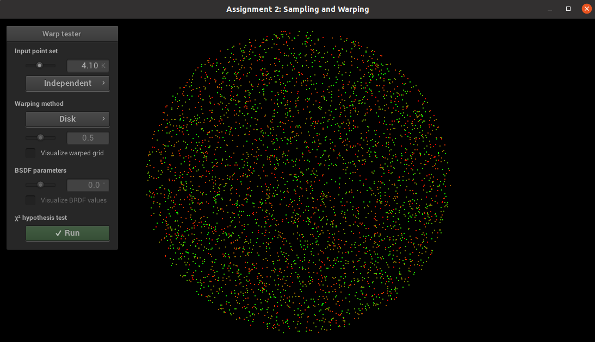
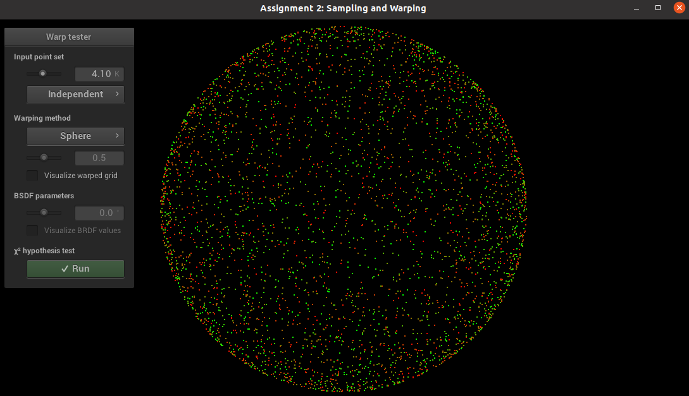
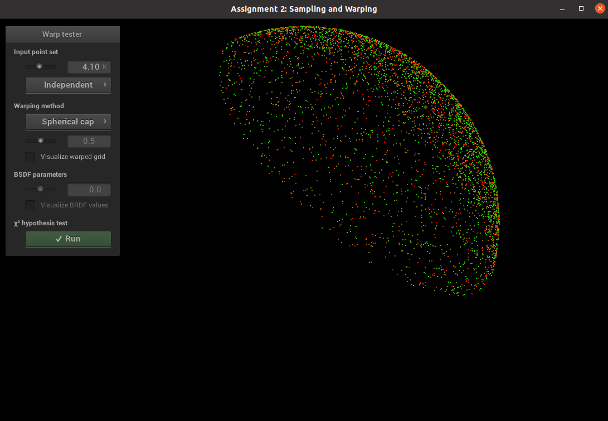
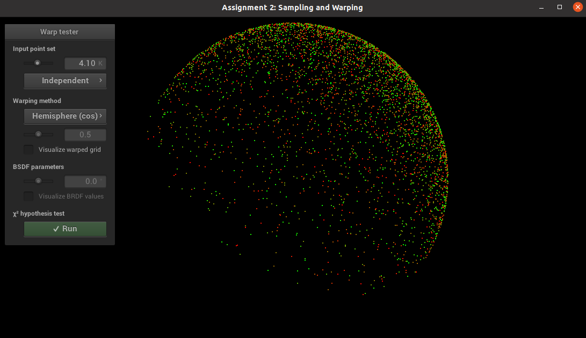
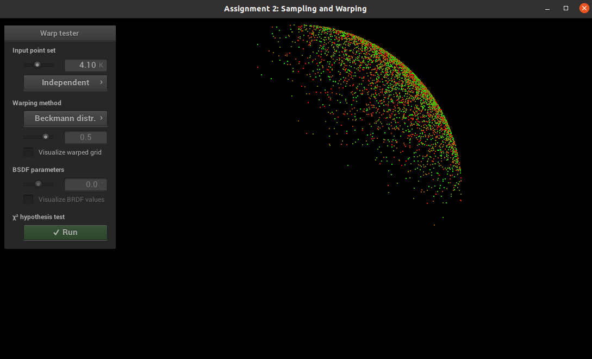

Part 1: Sample Warping
Uniform disk
Uniform sphere
Uniform hemisphere

Uniform sphere cap
Cosine hemisphere
Beckmann distribution
The CDF function is calculated as follows:
\begin{align} I = P(\pi/2,2\pi) & = \int_0^{2\pi} \int_0^{\frac{\pi}{2}} \frac{e^{\frac{-\tan^2{\theta}}{\alpha^2}}}{\pi\, \alpha^2 \cos^4 \theta }\cos{\theta}\sin{\theta} ~ d\theta ~ d\phi \\ & = 2\pi \int_0^{\frac{\pi}{2}} \frac{e^{\frac{-\tan^2{\theta}}{\alpha^2}}}{\pi\, \alpha^2 \cos^4 \theta }\cos{\theta}\sin{\theta} ~ d\theta \\ \end{align} Set $$ x = cos^2{\theta} $$ Then $$ dx = dcos^2{\theta} = -2 \cos{\theta}\sin{\theta} ~ d\theta $$ \begin{align} I & = \frac{1}{\alpha^2} \int_0^1 e^\frac{x-1}{\alpha^2 x}\frac{1}{x^2} dx \\ & = \frac{e ^ \frac{1}{\alpha^2}}{\alpha^2} \int_0^1 e^\frac{-1}{\alpha^2 x}\frac{1}{x^2} dx & = e ^ \frac{1}{\alpha^2} [\ e^\frac{-1}{\alpha^2 x} ]\ ^1_0 \end{align} Therefore, $$ p( \theta ) = 1 - e ^ \frac{1}{\alpha^2} e ^ \frac{1}{-\alpha^2 cos^2{\theta}} = 1 - e ^ \frac{-tan^2{\theta}}{\alpha^2} $$ $$\theta = arctan( \sqrt{\alpha^2 * (-ln(1 - p(\theta)))} ) $$ Part 2: Validation
TODO: report problems, comments, and screenshots of all passed tests...